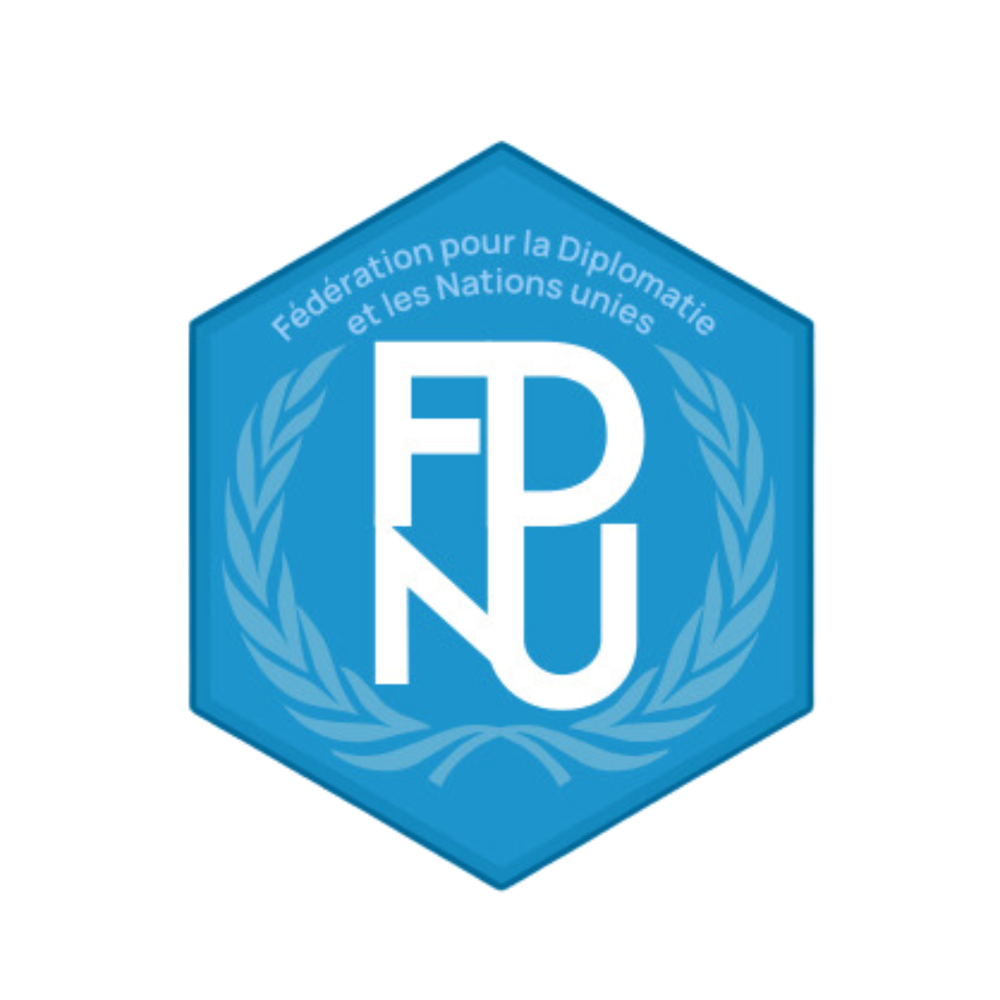

Jan 2024 - Present

🚀 Founder
- Co-founded a startup
- Built an AI-powered educational platform
- Developed novel editing model for Maths
- Networked with universities, investors and researchers
AI Development • Machine Learning • Mathematics • Business Development • Dart / Flutter • Networking
Jan 2024 - Dec 2024

🤖 VP of AI Training and Education
- Designed AI training programs and taught 100+ students
- Developed educational content for AI/ML
- Learned and built CNNs, GANS, Autoencoders, UNets, and Transformers
- Organized a Hackathon with 80+ people from 10 prestegious universities on DeepFakes
Mentorship • Computer Vision • Transformers • Leadership
Jan 2024 - Dec 2024
🌍 Deputy General Director
Support Branch - Federation for Diplomacy and United Nations
- Managed 4 Departments: HR, Public Relations, Communication and Careers with 80+ people
- Coordinated with multiple departments and other branches
- Engaged with Ambassadors & Geopolitical Researchers
- Developed strategic partnerships
Management • Strategic Planning • Partnership Development • Leadership